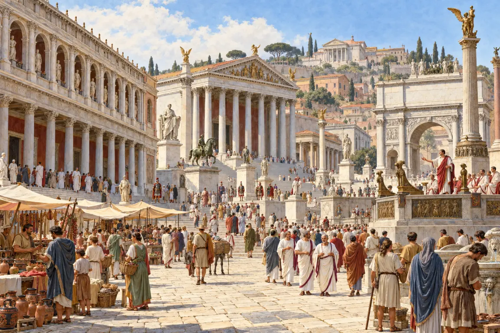
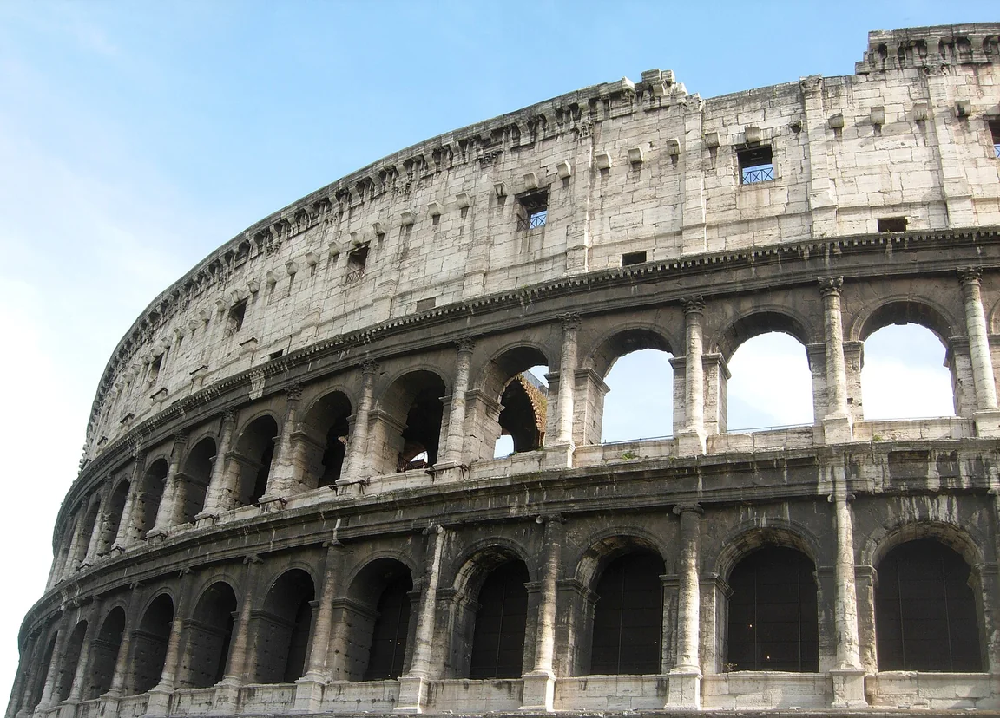
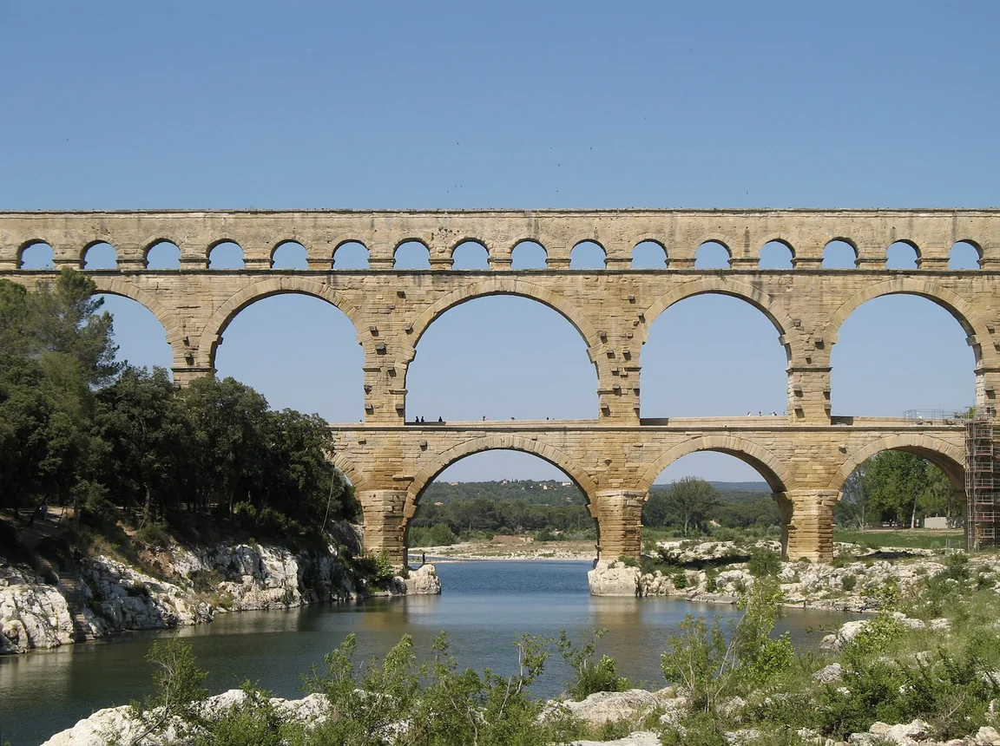
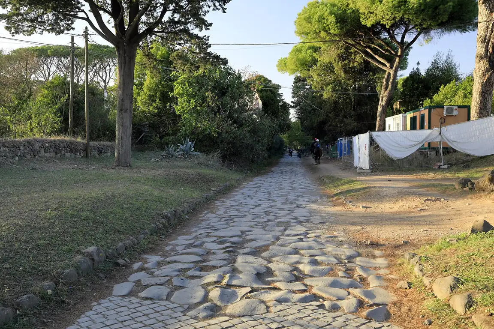
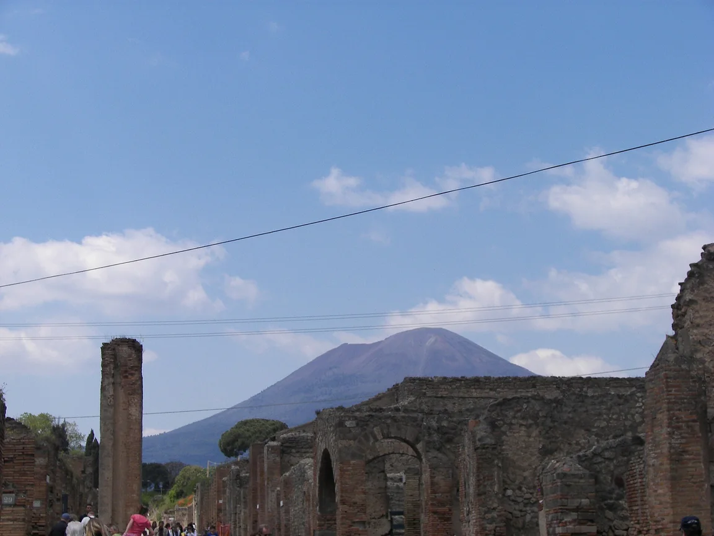
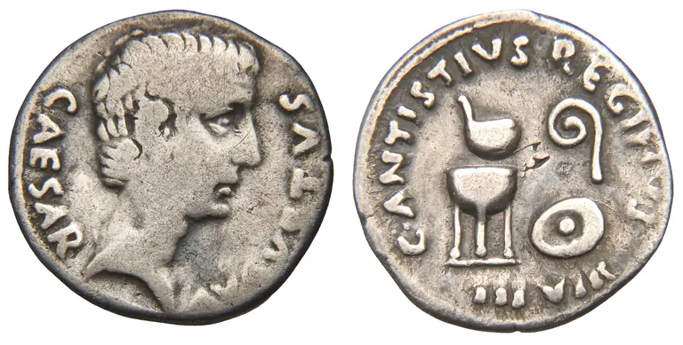
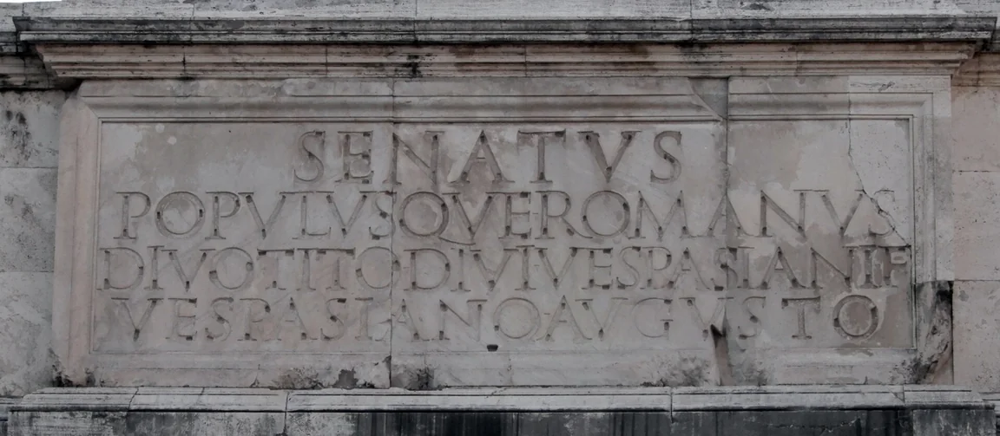

Království
Podle pověsti založili Řím roku 753 př. n. l. bratři Romulus a Remus. Vládli králové.
Pro 6.–7. ročník: od království přes republiku k císařství, stavitelství a vznik křesťanství.
Římské dějiny trvaly přes tisíc let. Abys v nich neztratil přehled, rozděl si je podle toho, kdo vládl. To je otázka, kterou si u každé události polož jako první.
Podle pověsti založili Řím roku 753 př. n. l. bratři Romulus a Remus. Vládli králové.
Od roku 509 př. n. l. stáli v čele dva volení konzulové a senát. Konec přinesly občanské války; Caesar byl zavražděn 44 př. n. l.
Roku 27 př. n. l. se Octavianus Augustus stal prvním císařem. Západořímská říše zanikla 476 n. l. – tím končí starověk.
Římané byli skvělí stavitelé: akvadukty přiváděly vodu do měst, silnice spojovaly celou říši, v Koloseu bojovali gladiátoři. Jejich jazyk latina je základem románských jazyků. V době císařství se šířilo křesťanství; dlouho bylo pronásledované, až je roku 313 povolil Konstantin Veliký milánským ediktem.
Typická chyba je u přelomu letopočtu: před naším letopočtem je dřív větší číslo, v našem letopočtu menší číslo. Proto 44 př. n. l. bylo dřív než 27 př. n. l.
Seřaď od nejstarší: milánský edikt (313 n. l.), zavraždění Caesara (44 př. n. l.), vznik republiky (509 př. n. l.), zánik západořímské říše (476 n. l.).
✅ vznik republiky (509 př. n. l.) → Caesar (44 př. n. l.) → milánský edikt (313) → zánik západořímské říše (476)

Skutečné stavby a předměty, které můžeš vidět dodnes. Podle čeho je poznáš?






Řím prošel třemi obdobími: království, republika (v čele dva konzulové a senát) a císařství. Římané byli skvělí stavitelé – akvadukty, silnice a beton používáme dodnes.